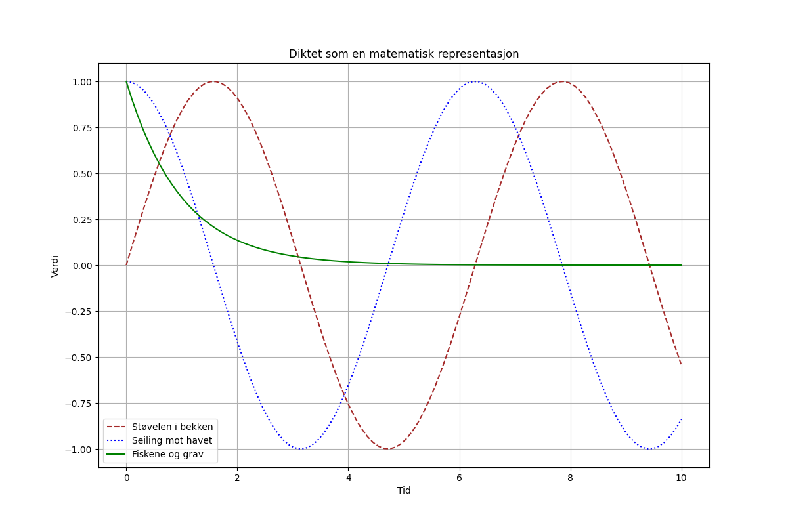

En gammel støvel i en bekk, ble revet bort med ett lite trekk. Han seilte av sted mot det åpne hav, mens fiskene sang om hans siste grav.

import matplotlib.pyplot as plt
import numpy as np
# Data fra diktet
x = np.linspace(0, 10, 100)
y1 = np.sin(x)
y2 = np.cos(x)
y3 = np.exp(-x)
# Lag en figur og akser
fig, ax = plt.subplots(figsize=(12, 8))
# Plot graf 1: Støvelen i bekken
ax.plot(x, y1, label='Støvelen i bekken', color='brown', linestyle='--')
# Plot graf 2: Seiling mot havet
ax.plot(x, y2, label='Seiling mot havet', color='blue', linestyle=':')
# Plot graf 3: Fiskene og grav
ax.plot(x, y3, label='Fiskene og grav', color='green', linestyle='-')
# Legg til etiketter og tittel
ax.set_xlabel('Tid')
ax.set_ylabel('Verdi')
ax.set_title('Diktet som en matematisk representasjon')
# Legg til et boks- og linjegrydder
ax.grid(True)
# Legg til legende
ax.legend()
# Lagre figuren
plt.savefig(output_path)execution_ok=True fallback_used=False image_ok=True